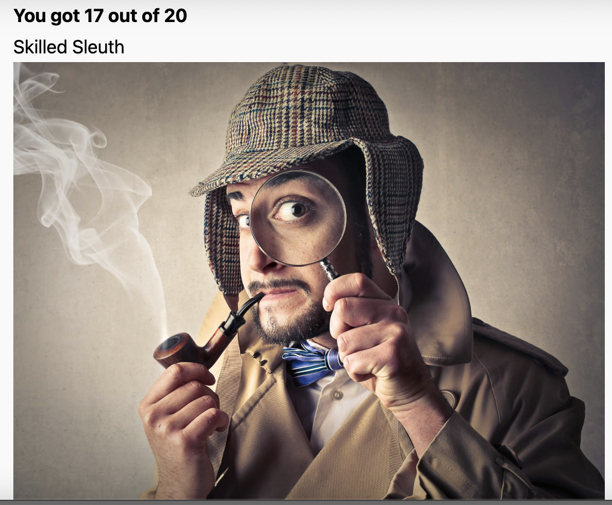

For the moment, I will keep all the notes in one place. Notices are made from the book, online training and the “Lie To Me” series. When and if I make some observations, I will also keep a note.
Dr. Ekman found evidence for seven universal emotions (fear, surprise, anger, sadness, enjoyment, contempt and disgust). Within each emotion, there are countless variations, leading Dr. Ekman to describe each emotion as constituting a family of related affective states, which share commonalities in their expression, physiological activity, and in the types of appraisal which call them forth. These shared characteristics within an emotion family distinguish one emotion family from another. For example, fear can range from slight trepidation to extreme horror and terror. They are very different experiences, but can all be categorized into the family of fear.
Emotions
Happy
Main characteristics:
- Both lip corners are raised.
- Wrinkles around the eyes.
- Slight narrowing of the eyes usually suggests a genuine smile.
- Changes in the lips area make the area around the nose change.
- Sometimes, there is a slight movement down the eyebrows.
Contempt
- One side of the lips is raised.
- Eye area is not affected.
- Contempt is always a unilateral expression
- It Might spread to the eyebrow on the other side of the face.
Contempt vs Happy
- No tightening of the lip corner like with the happy face.
- Contempt is always a unilateral expression
- A mixed smile in with contempt is quite usual because people often enjoy feeling contempt.
Sad
- Inner corners of the eyebrows are raised. If, in the normal state, the eyebrows are already oblique, then when the person is sad, the eyebrows will be flattened. ⚠️
- Lip corners go down. ⚠️ Sometimes, that causes the lower part of the face to get wider.
- Contradictions in the face - when the head is tilted upwards, not downwards. When the head tilts up, which is contrary to what usually happens in sadness when the head tips downward.
Disgust
- Raised nostril
- Raised upper lip ⚠️
- It Might be accompanied by a slight inclining of the head forward by moving the chin towards the chest a bit.
Anger
- Squared (not like in fear, though, but close to disgust) or tensed lips (prissy anger). Lips are narrowed.
- Glare in the eye
- Frown
- Jaw thrust and the face coming forward
Disgust vs Anger
Surprise
Surprise is the briefest of all the emotions, lasting only a few seconds at most. In a moment, surprise passes as we figure out what is happening. Then surprise merges into fear, amusement, relief, anger, disgust, and so forth, depending upon what it was that surprised us. Or, it may be followed by no emotion at all, if we determine that the surprising event was of no consequence to us.
- Genuine surprise is usually a quick emotion. Anything up to 1 second is most likely a fake.
- Lower jaw drops down relaxed.
- Eyes widen.
- Eyebrows are raised.
- Horizontal wrinkles in the forehead,
Fear
Dr. Ekman distinguishes the experience of fear with three factors. Intensity: How severe is the harm that is threatened? Timing: Is the harm immediate or impending? Coping: What, if any, actions can be taken to reduce or eliminate the threat? Generally, the more significant or severe the threat is, the greater our fear response. When we are able to cope with the threat, this generally lessens or removes the fear. Alternatively, when we are helpless to decrease the threat of harm, this intensifies the fear. Whether a threat is immediate or impending can greatly impact our experience of fear. An immediate threat can either focus our attention and mobilize us to cope with the danger, or it can leads us to become overwhelmed and freeze. An impending threat can feel more distant and less intense, or we might ruminate on it for a longer time, without taking any action, thus prolonging our experience of fear.
In fear, heart rate and blood pressure increases and blood flows towards your limbs to help prepare you to fight or flee. Other regulatory functions, such as digestion, temporarily slow down or cease as more energy is diverted and devoted to coping with the immediate threat. During fear, cortisol (the primary stress hormone) is released which actually decreases the release of dopamine (which happens in response to a reward).
- Eyes wide open, and the sclera above the iris is visible. ⚠️
- Lower eyelid is tensed.
- Eyebrows are raised, producing a horizontal series of wrinkles. They are moved towards each other.
- The lips are tensed, and the corners are pulled backwards. lip stretch
- Head moves further away (usually)
- When the person recruits the platysma muscle in their neck, you can see the stretching of the muscles in that area which often occurs with extreme fear.
Fear vs Suprise
- When feeling surprised, the jaw drops down, while in fear, it’s tense.
- The upper eyelid is lifted higher in fear than in surprise, exposing more sclera (white of the eye).
- The facial expression of fear is often confused with surprise. While both expressions show distinctly raised eyebrows, a fear expression’s eyebrows are straighter and more horizontal whereas in surprise they are raised and curved. The upper eyelid is also lifted higher in fear than in surprise, exposing more sclera (white of the eye). Finally, the lips are tensed and stretched in fear but more open and slack in surprise.
Series notes
- 1.1
- When the person repeats the question entirely, most likely, it’s a lie.
- Men touch their noses when lying since they have some rectal tissue that itches (to confirm). Saw Putin with this gesture during an interview; funny.
- When lying, people mostly keep eye contact to make sure their lie is working. They break eye contact to remember something.
- Stretched and tense arm with a hand like a stop ✋ sign - argument.
- When remembering, people tend to look to the side, trying to recall something.
- One-sided shrug. Translation: “No confidence in what I’ve just said”. If accompanied by phrases like “I don’t know” or “What are you talking about?” suggest a lie.
- Covering face with a hand and avoiding eye contact - guilt.
- Ask about the day. Then ask to repeat backwards. When lying - people won’t be able to do that.
- 1.2
- Stepping backwards, arms crossed - retreat, meaning the person doesn’t believe what he is saying.
- Touching the neck might indicate a lie (manipulator)
- Lips corners down. No other signs of sadness could indicate a lack of confidence in what someone is saying. Mouth shrug.
- Arsen + rape have a high correlation.
- Hand shrug - turning the hand palm up.
- Thrusting the chin up - anger
- 1.3
- When the voice pitch goes up - lie
- Self-comforting gestures like stroking one’s own hand/arm etc.
Under Question or Observations
- I don’t remember where I get this from, but I remember someone saying that when telling lies, a person usually looks up or something, while with the remembering, they typically look down.
- When you do something wrong, this might make people do it for you. It’s a way to manipulate.
- Most often, I confuse anger and disgust.
- Anger - head forwards, sadness - backwards.
- When in the sentence that is supposed to be assertive, there is an increase in intonation as in a question -> lie?
Other
Startle
The timing of the startle response is even more constrained than surprise- the expression is always apparent in a quarter of a second and is over in half a second. It is so fast that if you blink, you will miss seeing someone’s startle. Being told you are about to be startled by a very loud noise reduces, in most people, the magnitude of the reaction, but doesn’t eliminate it. Alternatively, you can’t be surprised if you know what is going to happen. No one can inhibit the startle reaction, even if one is told exactly when a loud noise will occur. Many of these differences come from the fact that startle is a physical reflex, rather than an emotion, like surprise. https://www.paulekman.com/quizzes/fear-and-surprise-quiz/
In surprise, the eyes open wide, the eyebrows raise, and the jaw drops open. In startle, the eyes close tightly, the eyebrows lower, and the lips stretch tensely.
References (To Read)
Expand…
1
https://www.paulekman.com/blog/lie-checking-catching-someone-in-a-lie/
2
https://www.paulekman.com/quizzes/lying-quiz/
Heh

3
https://www.paulekman.com/quizzes/micro-expressions-test/
4
Lying checklist https://paulekmangroup.wpenginepowered.com/wp-content/uploads/2022/03/Lying-Checklist.pdf